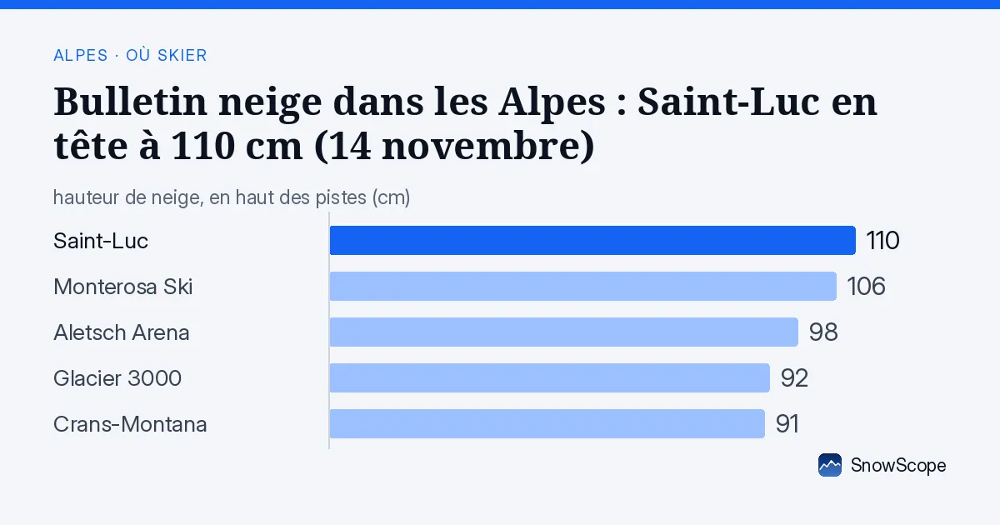

Bulletin neige dans les Alpes : Saint-Luc en tête à 110 cm (14 novembre)
Bulletin neige dans les Alpes, 14 novembre. Pour trouver le plus de neige dans les Alpes aujourd'hui, regardez Saint-Luc (Suisse) : environ 110 cm en altitude. Ensuite viennent Monterosa Ski (106 cm) et Aletsch Arena (98 cm). Aujourd'hui, 791 des 1 179 stations dans les Alpes ont de la neige sur le haut du domaine ; au total, notre modèle compte 68 650 km² sous la neige. Une neige épaisse sur une face nord et un sol nu sur le versant sud de la même crête, c'est normal en montagne sèche.
Consultez les prévisions neige en temps réel pour Saint-Luc sur l'application SnowScopeHauteurs de neige, alertes poudreuse et carte 3D, gratuitement.
La neige sur les pentes aujourd'hui
Depuis le 12 novembre, la neige est passée de 35 250 km² à 68 650 km² aujourd'hui ; pour le 17 novembre, notre prévision donne 56 290 km².
| Station | Hauteur de neige | Neige fraîche, 72 h | Attendu, jours suivants | Sommet |
|---|---|---|---|---|
| Saint-Luc | 110 cm | 19 cm | 24 cm | 2 973 m |
| Monterosa Ski | 106 cm | 28 cm | 18 cm | 3 030 m |
| Aletsch Arena | 98 cm | 18 cm | 17 cm | 2 869 m |
| Glacier 3000 | 92 cm | 26 cm | 38 cm | 2 931 m |
| Crans-Montana | 91 cm | 18 cm | 29 cm | 2 872 m |

De la pluie jusqu'en haut ?
Le mardi 17 novembre, l'isotherme 0 °C monte vers 3 160 m, au-dessus du sommet des remontées à 2 973 m : il peut pleuvoir jusqu'en haut.
La pluie sur la neige fraîche l'alourdit et, après une nuit froide, la rend glacée : les jours suivants conviennent mieux aux pistes damées qu'à la poudreuse.
Vers 2 327 m, Saint-Luc a 7 cm aujourd'hui ; un 14 novembre normal y compte 22 cm.
C'est plus que lors de 8 des 46 hivers passés à cette date.
Les hivers passés, la meilleure neige à Saint-Luc arrivait d'habitude début mars / fin mars.
Jour après jour à Saint-Luc : dimanche 15 novembre 4 cm; lundi 16 novembre 7 cm; mardi 17 novembre 13 cm.
Altitude par altitude à Saint-Luc : 1 682 m 0 cm au sol, 37 cm de plus dans les 7 prochains jours; 2 327 m 5 cm au sol, 50 cm de plus dans les 7 prochains jours; 2 973 m 14 cm au sol, 58 cm de plus dans les 7 prochains jours.
À quoi s'attendre ensuite
Entre aujourd'hui et le 17 novembre, nous attendons 38 cm à Glacier 3000, 29 cm à Crans-Montana et 24 cm à Saint-Luc.
Le 17 novembre, l'isotherme 0 °C à Saint-Luc grimpe entre 2 450 m et 3 160 m, plus haut que le sommet des remontées (2 973 m) : attendez-vous à de la pluie ou de la neige mouillée sur toutes les pentes.
Les prévisions à quelques jours peuvent changer : regardez à nouveau la carte la veille du départ.
Ce qu'ont vu les stations
Le 14 novembre, la station de mesure Weißseespitze (3 499 m) a relevé 259 cm au sol. À la station de mesure Sonnblick (3 109 m), le capteur indiquait 60 cm de neige au sol le 14 novembre, dont 5 cm tombés en 24 heures. Le 14 novembre, la station de mesure Schnals Teufelsegg (3 035 m) a relevé 47 cm au sol, dont 7 cm de neige fraîche en 24 heures.
Nos chiffres des stations de ski sont des estimations pour le haut du domaine. Ceux des stations de mesure sont de vraies mesures, mais en un seul point et à la date indiquée.
Comment se situe ce début
Saint-Luc est en retard à 2 327 m : seulement 7 cm aujourd'hui, sous les 22 cm habituels. Seuls 8 des 46 hivers passés en avaient moins un 14 novembre.
À Monterosa Ski, le sol est encore nu à 2 118 m aujourd'hui, alors que 13 cm est habituel à cette date. Seuls 2 des 46 hivers passés en avaient aussi peu.
Conseils aux skieurs
- De la neige sur la carte ne veut pas dire que la station est ouverte : vérifiez remontées et dates d'ouverture sur son site.
- La neige de début de saison est fine. Restez sur les pistes ouvertes et damées : cailloux et herbe se cachent juste dessous.
- Dans les montagnes sèches comme l'Atlas, la neige tient en altitude sur les pentes nord et fond d'abord côté soleil. Suivez l'ombre.
- Avant le hors-piste ou la randonnée, lisez le bulletin d'avalanche officiel (liens ci-dessous).
- Activez une alerte poudreuse dans l'app SnowScope pour savoir quand Saint-Luc reçoit de la neige fraîche.
À propos de ces chiffres
Les hauteurs de neige des stations sont la neige la plus épaisse sur le haut du domaine, d'après le modèle de neige SnowScope (environ 1 km, calcul du 14 novembre) ; ce sont des estimations pour une zone, pas une mesure en un point. Les valeurs des stations de mesure sont mesurées à la date indiquée. Les prévisions peuvent changer. Consultez toujours le bulletin d'avalanche officiel avant le hors-piste.
Bulletins d'avalanche officiels: EAWS (Alps)
Citer ce bulletin
Pour la recherche, l'enseignement ou la presse : chiffres et graphiques réutilisables librement sous CC BY 4.0 avec cette citation.
SnowScope (2026), Bulletin neige dans les Alpes : Saint-Luc en tête à 110 cm (14 novembre), https://snowscope.app/blog/fr/2026/11/alps-saint-luc-snow-depth-today-14-november-2026.html, consulté le 2026-11-14
SnowScope (Atlas Labs). (2026, November 14). Bulletin neige dans les Alpes : Saint-Luc en tête à 110 cm (14 novembre). SnowScope snow reports. https://snowscope.app/blog/fr/2026/11/alps-saint-luc-snow-depth-today-14-november-2026.html
BibTeX
@misc{snowscope2026alpssaintlucsnowdepthtod,
author = {{SnowScope (Atlas Labs)}},
title = {Bulletin neige dans les Alpes : Saint-Luc en tête à 110 cm (14 novembre)},
year = {2026},
month = nov,
howpublished = {\url{https://snowscope.app/blog/fr/2026/11/alps-saint-luc-snow-depth-today-14-november-2026.html}},
note = {Published 2026-11-14 12:48 UTC; accessed 2026-11-14}
}· CC BY 4.0 · Méthodes, données et outils →
Saint-Luc : neige et température selon l'altitude, cet hiver vs l'hiver dernier (outils) →
Suivre Saint-Luc
Gratuit : un message quand la neige arrive, et la météo chaque matin.
Autres bulletins neige

Comparez les probabilités de neige en décembre et les tarifs vérifiés de forfaits dès 40,00 EUR dans les domaines skiables italiens pour votre week-end en voiture.

Les domaines skiables suisses affichent 142 % de la couverture neigeuse normale pour le 18 novembre. Glacier 3000 domine le classement avec 52 cm, avant l'arrivée de tempêtes majeures.